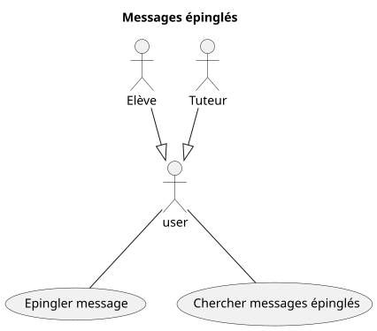

Domaine : Communication
Envoi / Lecture de messages

Epingler et rechercher des messages

Fonctionnalité: Envoi d'un message à un autre utilisateur
En tant qu'utilisateur connecté
Je veux envoyer un message à un autre utilisateur
Afin de communiquer avec un autre utilisateur
Scénario: Envoi d'un message à un autre utilisateur
Etant donné que je suis connecté
Et que j'ai cliqué sur nouveau message
Et que j'ai écrit un message
Et que j'ai renseigné un destinataire existant
Lorsque je clique sur envoyer
Alors le message est envoyé au destinataire
Et le message est marqué non lu pour le destinataire
Et un email de notification est envoyé au destinataire
Scénario: Refus d'envoi d'un message à un autre utilisateur inexistant
Etant donné que je suis connecté
Et que j'ai cliqué sur nouveau message
Et que j'ai écrit un message
Et que j'ai renseigné un destinataire inexistant
Lorsque je clique sur envoyer
Alors le message n'est pas envoyé au destinataire
Et un message m'avertit que le destinataire n'existe pas
Scénario: Refus d'envoi d'un message vide à un autre utilisateur
Etant donné que je suis connecté
Et que j'ai cliqué sur nouveau message
Et que j'ai renseigné un destinataire inexistant
Mais que je n'ai pas écrit de message
Lorsque je clique sur envoyer
Alors le message n'est pas envoyé au destinataire
Et un message m'avertit que le message est vide
Fonctionnalité: Lecture d'un message reçu
En tant qu'utilisateur connecté
Je veux accéder à mes messages
Afin d'en lire le contenu
Scénario: Lecture d'un message reçu
Etant donné que je suis connecté
Et que j'ai reçu au moins un message
Et que j'ai cliqué sur consulter mes messages
Lorsque je clique sur un message reçu
Alors je peux lire le contenu du message
Et je peux voir l'expéditeur
Et je peux voir l'horodatage de réception
Et le message est marqué lu
Fonctionnalité: Epingler un message
En tant qu'utilisateur connecté
Je veux épingler un message
Afin de le retrouver plus facilement plus tard.
Scénario: Epingler un message
Etant donné que j'ai au moins un message
Et que je consulte ce message
Lorsque je clique sur "épingler message"
Alors le message est marqué comme épinglé
Et visuellement je vois qu'il est épinglé
Lorsque je clique sur "messages épinglés"
Alors je vois que le message que je viens d'épingler est dans la liste
Fonctionnalité: Désépingler un message
En tant qu'utilisateur
Je veux désépingler un message que je ne trouve plus utile
Afin d'avoir une liste pertinente et à jour de messages importants
Scénario: Désépingler un message
Etant donné que j'ai au moins un message épinglé
Et que j'ai cliqué sur "messages épinglés"
Et que je vois un message épinglé
Et que je consulte de message
Lorsque je clique sur "Désépingler message"
Alors le message n'est plus épinglé
Et visuellement je vois qu'il n'est plus épinglé
Lorsque que je clique sur "Messages épinglés"
Alors je vois que le message n'est plus dans la liste
Fonctionnalité: Recherche de messages reçus épinglés
En tant qu'utilisateur
Je veux retrouver facilement mes messages reçus épinglés
Afin de relire des informations jugées importantes
Scénario: Recherche des messages épinglés existants
Etant donné que je consulte mes messages reçus
Et que j'ai 3 messages reçus épinglés
Lorsque je clique sur "chercher dans épinglés"
Alors mes 3 messages reçus épinglés sont affichées
Scénario: Recherche de messages épinglés inexistants
Etant donné que je consulte mes messages reçus
Et que je n'ai épinglé aucun message reçu précédemment
Lorsque que je clique sur "chercher dans épinglés"
Alors aucun message reçu ne s'affichée
Et un message m'averit que je n'ai aucun message reçu épinglé
Hors pérmiètre initial
Gestion des contacts
Afin de faciliter la communication entre plusieurs élèves et tuteurs, former des groupes d'entre aide, etc. Une gestion des contacts et de groupes peut être envisagée.